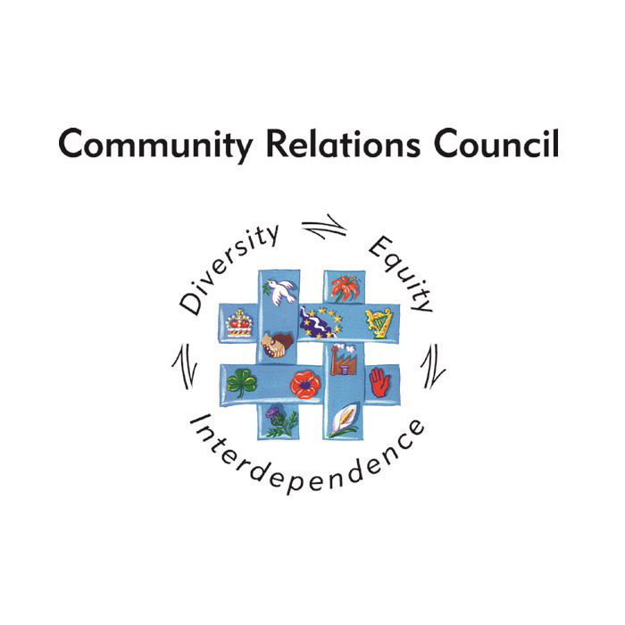

The Belfast Mobility Project was made possible by a Research Grant from the ESRC (ES/L016583/1). The project has benefitted greatly from the contributions of an advisory group that includes:
Donna Blaney (Executive Office)
Sandra Bucham (Department for Social Development/Belfast Regeneration Office)
Fred Boal (Queen’s University emeritus professor of geography)
Callie Persic (Belfast City Council, present in personal capacity)
Nigel Grimshaw (Belfast City Council)
Jacqueline Irwin (Community Relations Council)
Jennifer Hawthorne (Housing Executive)
We would also like to thank our partner organisations:

Interview with Fred Boal
Here, advisory board member, Professor Emeritus Fred Boal chats with Research Associate Bree Hocking about the importance of studying activity space segregation in Belfast and its implications for policy: